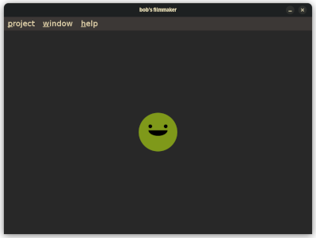
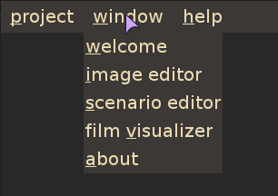

welcome to the main application tutorial!
this tutorial will teach you the main features of the application.
the application's main page is as shown below.
the concept of the application is :
you can organise your workspace however you want.
the workspace is composed of these different elements :
these different elements can be launched using the window menu.
each workspace element is presented in an internal frame.
these internal frames can be moved, resized and closed.
below is an example of a workspace element (visualizer) :
you can refer to the other available tutorials for specific information!